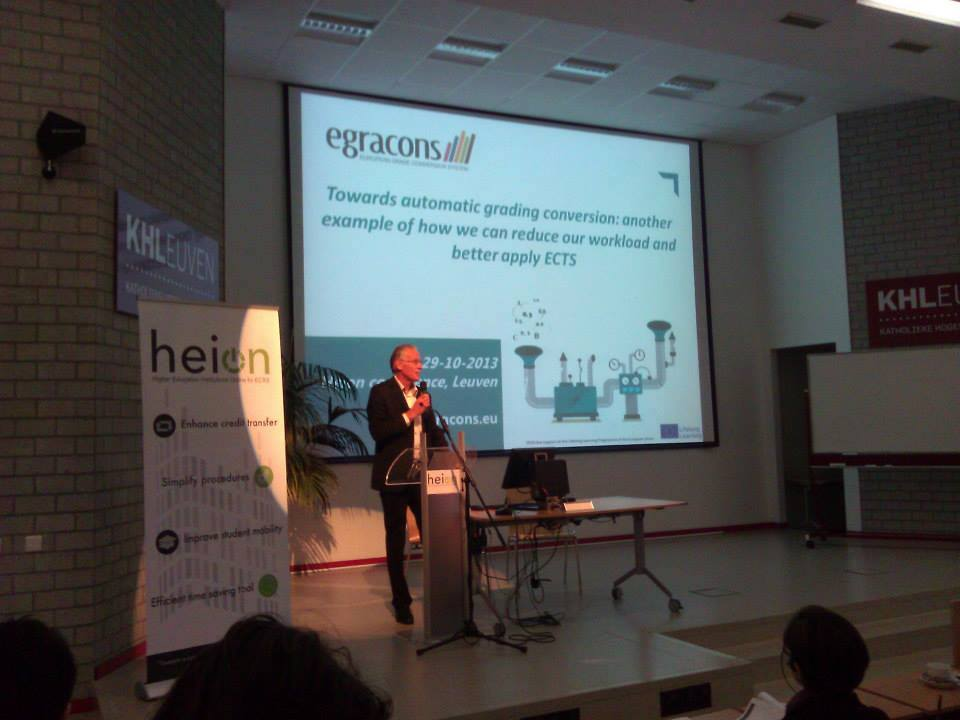
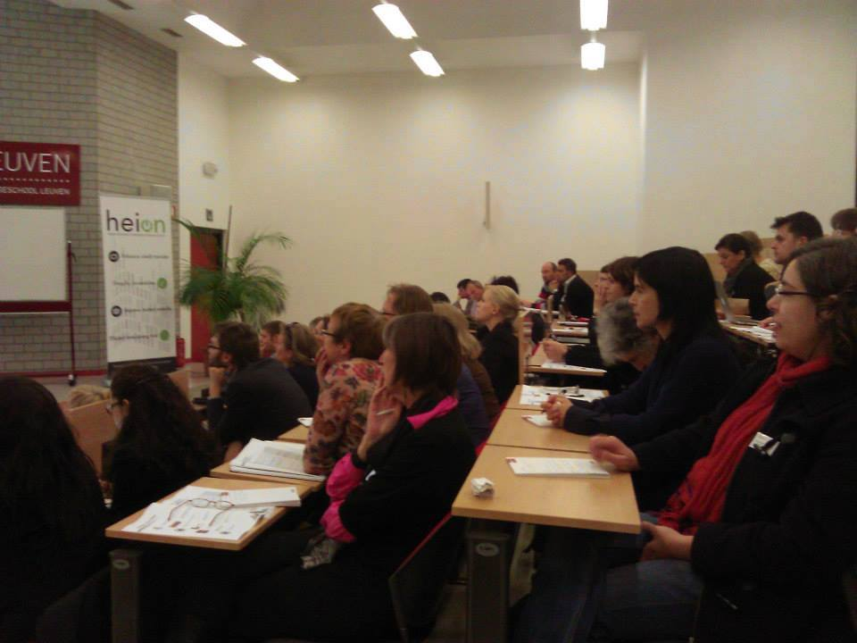

Medewerking aan projecten
- 
- 

HEION congres
Final Conference HEION
29 - 30 oktober 2013
Student crew van zes studenten stond in voor de organisatie van het evenement. Gaande van het regelen van verblijf en vervoer, over het maken van brochures en het organiseren van een groepsactiviteit.


NIBS Competitie
NIBS Worldwide Case Competition
3 - 9 maart 2013
Student crew van tien studenten die het verblijf en de activiteiten van de deelnemers organiseerden onder begeleiding van twee lectoren. Maken van communicatiemateriaal, organiseren van een culturele daguitstap, begeleiding tijdens de wedstrijd,...


Studenten congres
Studentencongres 3e jaars ECHO
29 februari 2012
Student crew van 12 studenten die onder de begeleiding van twee lectoren alle aspecten van het studentencongres regelen. Alles werd samen besproken en beslist; van inhoud van de presentaties tot catering.